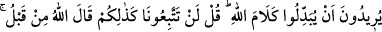
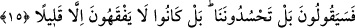

etmemiş bir hale getirir. Allah dilediğinin kalbi için mağfiret eder ve dilediği nefse
rahmet eder. Kimisinin nefis mülkünü kalbine verir, kimisinin kalb mülkünü de nefse
teslim eder.
15. Siz ganimetleri almak için gittiğinizde seferden geri kalanlar: Bırakın, biz de
arkanıza düşelim, diyeceklerdir. Onlar, Allah’ın sözünü değiştirmek isterler. De ki:
«Siz asla bizim peşimize düşmeyeceksiniz! Allah daha önce sizin için böyle
buyurmuştur.» Onlar size: Hayır, bizi kıskanıyorsunuz, diyeceklerdir. Bilâkis onlar,
pek az anlayan kimselerdir.
Allah (c.c.)’ın, kaçırdığınız Mekke ganimetleri yerine özel olarak size vaad ettiği
Hayber ganimetlerini almaya giderken şöyle diyecekler: Nitekim siz Mekke’den sulh
yaparak ayrılmış ve hiç bir şey almamıştınız. Müslümanların Hudeybiye’den sonra
ganimet aldıkları en yakın olay Hayber’dir. Denecek olursa ki: “Rivâyet edildiğine göre
Rasûlullah (s.a.) o ganimetlerden bir kısmını Habeşistan’dan hicret eden Ca’fer (r.a.) ve
arkadaşlarına, Devsî’lere ve Eş’arî’lere vermiştir. Halbuki bunlar Hudeybiye’de
bulunmamışlardı. Bu halde nasıl olur da buradaki vaadedilen ganimetler Hayber
ganimetleri olabilir?” Bu soruyu şu şekilde cevaplandırabilirim: Evet o sayılanlara
ganimetten bir hisse ayrılmıştır, fakat bu, Hudeybiye’de bulunanların haklarından feragât
etmeleri sonucu ortaya çıkan bir hissedir. Eğer Hayber sulh yoluyla alınmış olsaydı.
Mûsâ bin Ukbe ve beraberindekiler söylemiş oldukları o sözü söylemezlerdi. Nitekim
Peygamber (s.a.) onlara Hiç bir şey vermemişti. Sa’dî Müftî’nin Havâşî’sinde de aynı
açıklama mevcuttur.
Haybere gidişimizde size tabi olalım ve onlarla savaşalım, diyeceklerdir. “Onlar,
Allah’ın sözünü değiştirmek isterler.” Allah’ın sadece Hudeybiye’ye katılanlara
vaadettiği Hayber ganimetine ortak olmayı istemekle Allah’ın sözünü değiştirmek
istiyorlar. Çünkü Peygamber (s.a.) Hicretin altıncı senesi Zilhicce ayında
Hudeybiye’den döndü. O senenin geri kalan günlerinde ve hicretin yedinci senesi
Muharrem ayının ilk günlerinde Medine’de kaldı. Daha sonra da Hudeybiye’ye
katılanlarla beraber Hayber’e sefere çıktı. Orayı fethetti ve bir çok ganimet aldı.
Allah’ın emrettiği üzere sadece onlara ganimetleri paylaştırdı.
Bu âyette geçen “Allah’ın sözü”nden maksad, Allah Teâlâ’nın Hayber ganimetlerini
sadece Hudeybiye’ye katılanlara vaadetmesidir. Değilse “Siz bizimle ebediyyen
çıkamayacaksınız” ifâdesi değildir. Bu ifâde Tebük gazvesi için geçerlidir. “Bize tâbi